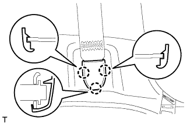
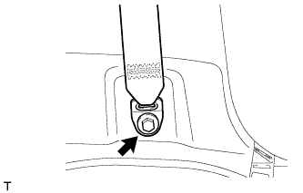

ТРОС УСТРОЙСТВА БЛОКИРОВКИ ТОПЛИВНОЙ КРЫШКИ В СБОРЕ (для 3-дверных моделей) > СНЯТИЕ |
| 1. ОТСОЕДИНИТЕ ПРОВОД ОТ ОТРИЦАТЕЛЬНОГО ВЫВОДА АККУМУЛЯТОРНОЙ БАТАРЕИ |
| 2. СНИМИТЕ ПЕРЕДНЕЕ СИДЕНЬЕ В СБОРЕ (для моделей с правосторонним рулевым управлением) |
Для сиденья с ручным приводом:
Снимите переднее сиденье в сборе (Нажмите здесь).
для сидений с функцией облегчения посадки "Walk In":
Снимите переднее сиденье в сборе (Нажмите здесь).
| 3. СНИМИТЕ ВЕЩЕВОЙ ЯЩИК В ОБЛИЦОВКЕ ТУННЕЛЯ ПОЛА (для моделей с правосторонним рулевым управлением) |
Для моделей с автоматической трансмиссией:
Снимите вещевой ящик в облицовке туннеля пола в сборе (Нажмите здесь).
Для моделей с механической трансмиссией:
Снимите вещевой ящик в облицовке туннеля пола в сборе (Нажмите здесь).
Для моделей с холодильной камерой:
Снимите вещевой ящик в облицовке туннеля пола в сборе (Нажмите здесь).
| 4. СНИМИТЕ ЗАДНЕЕ СИДЕНЬЕ № 1 В СБОРЕ (для моделей с задним сиденьем № 1) |
Для левой стороны:
Снимите заднее сиденье № 1 в сборе (Нажмите здесь).
Для правой стороны:
Снимите заднее сиденье № 1 в сборе (Нажмите здесь).
| 5. СНИМИТЕ ОПОРНУЮ НАКЛАДКУ ЛЕВОЙ ДВЕРИ В СБОРЕ |
 |
Наклейте защитную ленту вокруг опорной накладки двери.
С помощью отвертки освободите 4 фиксатора, 10 захватов и 2 направляющих и снимите опорную накладку двери.
| *1 | Защитная клейкая лента |
| 6. СНИМИТЕ ОПОРНУЮ НАКЛАДКУ ПРАВОЙ ДВЕРИ В СБОРЕ |
| 7. СНИМИТЕ ЗАДНЮЮ КРЫШКУ В СБОРЕ (для моделей с задней крышкой) |
Снимите заднюю крышку.
| 8. СНИМИТЕ НАКЛАДКУ КОМПЛЕКТА НАПОЛЬНЫХ КОВРИКОВ |
 |
С помощью отвертки расцепите 2 захвата и снимите накладку установочной пластины коврика.
| *1 | Защитная клейкая лента |
| 9. СНИМИТЕ ЗАДНЮЮ ОПОРНУЮ ПЛАСТИНУ КОВРИКА ЗАДНЕГО ПОЛА |
 |
Выверните 5 винтов.
Освободите 6 захватов и снимите заднюю опорную пластину коврика заднего пола.
| 10. СНИМИТЕ КРЫШКУ ОТВЕРСТИЯ В ЛЕВОЙ ЗАДНЕЙ БОКОВОЙ ОБЛИЦОВОЧНОЙ НАКЛАДКЕ |
 |
Освободите 2 захвата и 2 направляющих и снимите крышку отверстия в задней боковой облицовочной панели.
| 11. СНИМИТЕ ЗАДНИЙ НАПОЛЬНЫЙ КОВРИК |
 |
Снимите задний напольный коврик.
| 12. СНИМИТЕ ЗАЩЕЛКУ ОБЛИЦОВКИ БАГАЖНОГО ОТДЕЛЕНИЯ № 1 |
 |
Снимите защелку облицовочной панели багажного отделения, повернув ее по часовой стрелке.
| 13. СНИМИТЕ КОЛПАЧОК КРЕПЛЕНИЯ ЗАДНЕЙ КРЫШКИ № 1 (для моделей без задней крышки) |
 |
С помощью отвертки освободите 2 захвата и снимите колпачок крепления задней крышки.
| *1 | Защитная клейкая лента |
| 14. СНИМИТЕ ПЕРЕДНЮЮ БОКОВУЮ ОБЛИЦОВОЧНУЮ НАКЛАДКУ БАГАЖНОГО ОТДЕЛЕНИЯ (для моделей с задней крышкой) |
 |
С помощью отвертки освободите 2 захвата и снимите переднюю боковую облицовочную накладку полки багажного отделения.
| *1 | Защитная клейкая лента |
| 15. СНИМИТЕ КАРМАН В ЗАДНЕЙ БОКОВОЙ ОБЛИЦОВКЕ |
 |
Наклейте защитную ленту вокруг кармана в задней боковой облицовочной панели.
С помощью отвертки освободите 6 захватов и 2 направляющих и снимите карман в задней боковой облицовочной панели.
| *1 | Защитная клейкая лента |
| 16. СНИМИТЕ НАКЛАДКУ КРЕПЛЕНИЯ ПОЯСНОГО РЕМНЯ БЕЗОПАСНОСТИ |
|  |
Освободите 3 захвата и снимите накладку крепления поясного ремня безопасности.
| 17. СНИМИТЕ ЛЕВУЮ БОКОВУЮ ОБЛИЦОВОЧНУЮ ПАНЕЛЬ ПОЛКИ БАГАЖНОГО ОТДЕЛЕНИЯ В СБОРЕ |
|  |
Выверните болт и отсоедините напольное крепление ремня безопасности переднего сиденья.
 |
Выверните болт и отсоедините напольное крепление ремня безопасности заднего сиденья № 1.
Выверните 3 болта и 2 винта.
Освободите 9 захватов и 12 фиксаторов и снимите боковую облицовочную панель полки багажного отделения.

| 18. СНИМИТЕ ЛЕВУЮ ЗАДНЮЮ БОКОВУЮ ОБЛИЦОВОЧНУЮ ПАНЕЛЬ В СБОРЕ |
 |
Освободите 7 фиксаторов.
 |
Освободите 4 захвата и 2 направляющих, пропустите напольное крепление ремня безопасности заднего сиденья № 1 через заднюю боковую облицовочную панель и снимите заднюю боковую облицовочную панель.
| 19. СНИМИТЕ РЫЧАГ ОТКРЫВАНИЯ УСТРОЙСТВА БЛОКИРОВКИ ТОПЛИВНОЙ КРЫШКИ |
Освободите 3 захвата.
Снимите трос устройства блокировки топливной крышки и рычаг открывания устройства блокировки топливной крышки.
| 20. СНИМИТЕ ПЕРЕДНИЙ НАПОЛЬНЫЙ КОВРИК В СБОРЕ |
Для моделей с левосторонним рулевым управлением:
Освободите 4 зажима и отогните передний напольный коврик от крючков напольного коврика.
Для моделей с правосторонним рулевым управлением:
Освободите 8 зажимов и отогните передний напольный коврик от крючков напольного коврика.
| 21. СНИМИТЕ ТРОС УСТРОЙСТВА БЛОКИРОВКИ ТОПЛИВНОЙ КРЫШКИ В СБОРЕ |
Поверните трос против часовой стрелки и выньте трос из держателя.
Поверните держатель устройства блокировки против часовой стрелки и выньте держатель устройства блокировки.
Для моделей с левосторонним рулевым управлением:
С помощью съемника фиксаторов отсоедините зажим <A>.
Освободите 11 зажимов и снимите трос устройства блокировки топливной крышки.

Для моделей с правосторонним рулевым управлением:
С помощью съемника фиксаторов отсоедините 3 зажима <A>.
Освободите 11 зажимов и снимите трос устройства блокировки топливной крышки.